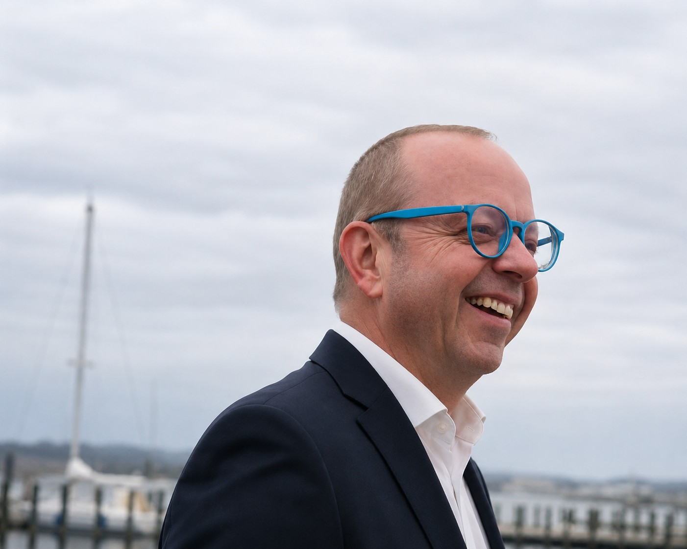

Executive Profile
Leadership is not defined by titles, authority or technical expertise. It is defined by the responsibility we accept, the decisions we make and the organisations we leave behind.
Who I Am
I am an international executive with more than 20 years of experience leading technical operations, facilities, asset management and organisational transformation across complex hospitality environments.
Throughout my career I have learned that sustainable success is never created by technology alone. It is created when people, strategy, operations and assets work together towards a common purpose.
My role has always been to connect these disciplines while creating environments where teams perform with confidence, organisations remain resilient and investments deliver long-term value.

Leadership Philosophy
I believe leadership begins with trust, grows through accountability and is sustained by continuous learning. Every decision should strengthen the organisation, develop people and protect the long-term value entrusted to us.
My objective has never been simply to operate successful buildings. It has always been to leave organisations stronger than I found them.
Current Focus
I remain associated with Novicom, supporting the exploration of establishing a German subsidiary. Alongside this, I am seeking the right executive leadership opportunity where I can leverage more than 20 years of international experience in strategic facilities, technical operations, asset management and organisational transformation to create sustainable business value.